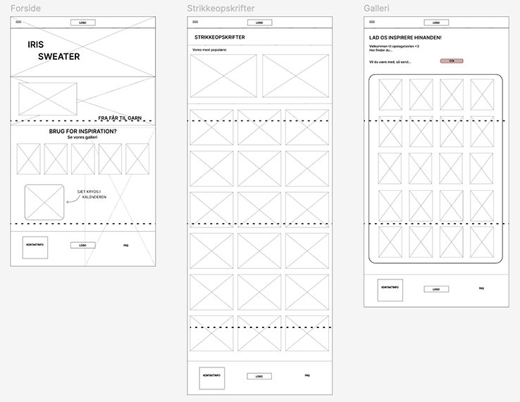
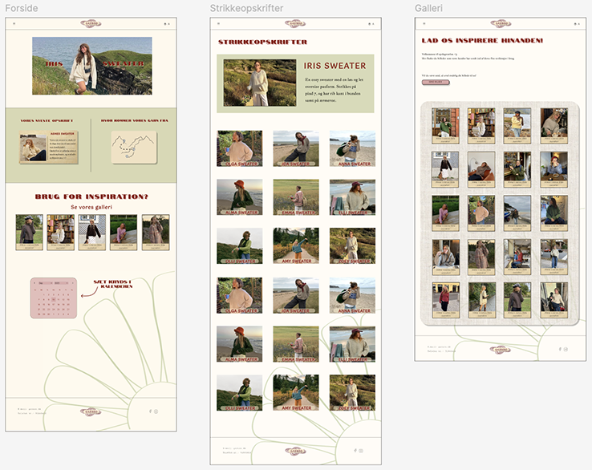

tema 3
grundlæggende ux/ui
formålet med tema 3 var at give os erfaring med udvalgte UX/UI-metoder samt at lære os, hvordan vi præsenterer vores proces med design og udvikling af produkt/løsning, samt formidler vores research- og testresultater for interessenter.

proces
tema 3 centrerede omkring udarbejdelsen af et emnesite, hvor emnet var valgfrit. jeg valgte strik, bl.a. fordi jeg havde adgang til målgruppen, hvilket var altafgørende for de tests jeg skulle udføre i løbet af temaet. jeg blev introduceret til arbejde med målgruppe, userstories og research metoder - som deskresearch. det hjalp mig til at snævre mig ind på emnet, samt få en bedre forståelse for eksisterende sider, hvad der skaber en god hjemmeside og hvad der definerer et godt brugerflow.
derefter gik jeg videre til ideudvikling og inspiration, hvor jeg lavede et moodboard, samt en four step sketch der ledte mig til mine wireframes. det var første gang jeg blev introduceret til moodboard, og four step sketch som ideudvikling, og jeg havde en positiv oplevelse af at det føltes meget konstruktivt. i arbejdet med emnesitet blev jeg også for første gang introduceret til illustrator, og endte med at udarbejde et logo halvt i illustrator og halvt i figma.


som led i undervisningen og processen læste jeg del 5 af interfacedesign bogen, som bl.a. fokuserer på stilarter. derefter gik jeg videre til at lave mit styletile og udarbejde min prototype i figma. i forbindelse med dette blev jeg introduceret til likert test i undervisning, og lavede en test på mit styletile. efter udarbejdelsen af prototypen blev jeg introduceret til 5. sekunders test og tænke højt test, og brugte disse til at teste min klikbare prototype, hvilket gav mig en indsigt i de ting jeg skulle ændre for at forbedre brugeroplevelsen.
herefter gik jeg videre til at lave mine layoutdiagrammer, og konvertere mine billeder hvorefter jeg så småt begyndte at kode mit site. i forbindelse med kodning af sitet blev jeg introduceret til favikon, udarbejdelse af dette i illustrator og implementering af det færdige favikon i min html. derudover blev jeg introduceret tl lighthouse test og udførte en på mit emnesite. afslutningsvis lavede jeg en præsentation af mit site på 7 min. som jeg fremlagde for en af mine undervisere og nogle af mine klassekammerater

løsning
min løsning endte ud som en hjemmeside med en forside og to undersider samt en burgermenu. forsiden indeholdte teasers til de to undersider, og to illustrationer udarbejdet i illustrator. begge undersider indeholdte en del billeder, da den ene var en side ment til at man kunne klikke ind på en strikkopskrift med henblik på at købe den, og den anden underside var en inspirationsgalleri. jeg anvendte grids til at lave min layouts, og fik øver mig en helt masse i dette. afslutningsvis fik jeg lavet en præsentation, som jeg fremlagde for en af mine undervisere og nogle af mine klassekammerater.

læring og reflektioner
jeg lærte utrolig meget om sammenhængen mellem brugerere og brugergrænseflader. det var første gang jeg prøvede en designproces som der var i tema 3, og jeg lærte noget på alle steps undervejs, hvilket var enormt givende. set i bagklogskabens lys satte jeg en lidt for høj barre med mit design, da jeg var temmelig udfordret da jeg nåede til kodningen - til gengæld lærte jeg en masse af det. det var en fordel for min process at skulle lave præsentationen, da det bidrog til et samlet overblik til sidst, og en fornemmelse for hvordan det er at præsentere et emne på en måde hvor der fokuseres mere på processen end resultatet. noget af det jeg virkelig har taget med mig i de efterfølgende temaer, er den designproces vi var igennem. jeg havde en fornemmelse af at få lagt et godt fundament og en god forståelse for vigtigheden af research, design og tests og de metoder som vi brugte undervejs i temaet. derudover fandt jeg det motiverende at arbejde med et selvvalgt emne og så frie rammer, som dette tema lagde op til.
pil